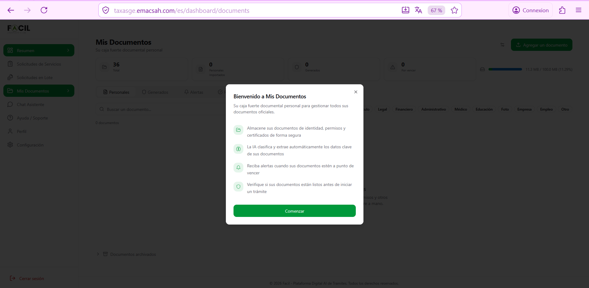
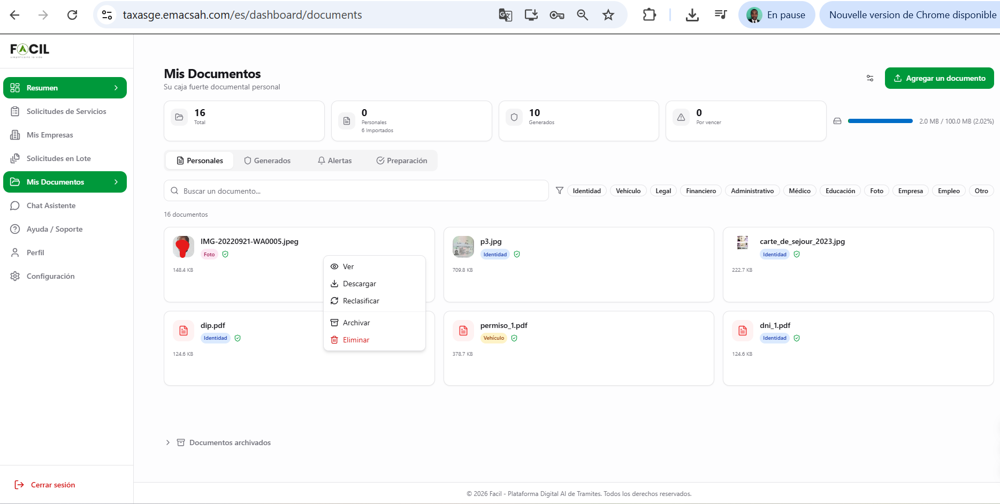
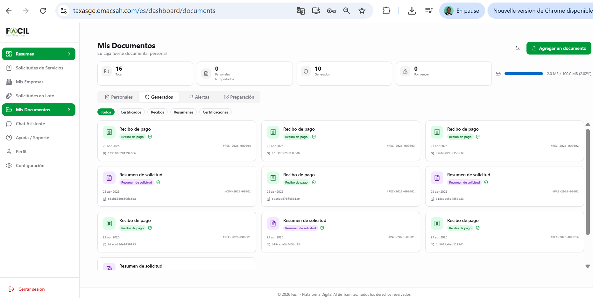
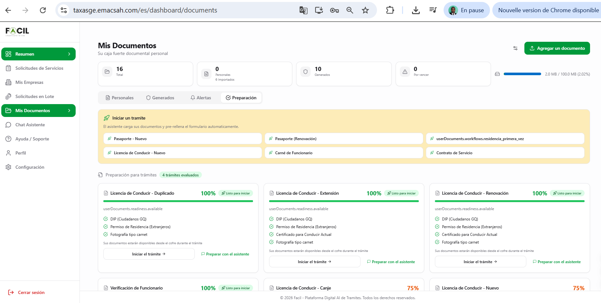
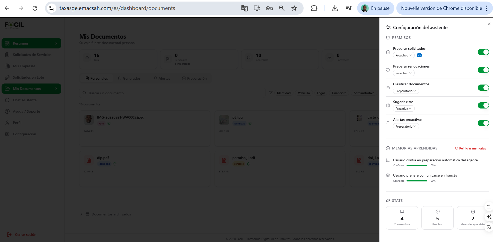

Mis documentos — caja fuerte digital
Su caja fuerte digital centraliza todos los documentos vinculados a sus trámites Facil — documentos personales subidos por usted, documentos generados automáticamente (recibos, certificados), preparación pre-trámite asistida por IA. 4 pestañas dedicadas + un asistente IA configurable.
1. Primer acceso — modal de bienvenida
La primera vez que abre «Mis Documentos», un modal de onboarding presenta las 4 promesas del módulo: almacenamiento seguro, clasificación IA automática, alertas de vencimiento, verificación pública vía QR.

La cuota de almacenamiento es de 100 MB por cuenta. Los archivos pueden estar en formato PDF, JPG, PNG (máx. 10 MB por archivo). El modal solo se muestra una vez — pulse «Comenzar» para acceder a las pestañas.
2. Pestaña «Personales»
Sus documentos subidos manualmente : DIP/NIE, certificados de residencia, fotos tipo carnet, documentos de identidad, etc. Visualización en grid de tarjetas con el icono de tipo de archivo y el nombre.
Acciones por documento (menú contextual)
- Ver — abrir el documento en una pestaña nueva
- Descargar — guardar en su computadora
- Reclasificar — corregir la categoría asignada por la IA si es errónea
- Archivar — ocultar de la vista activa (puede recuperarse)
- Eliminar — borrado definitivo (con confirmación)
Categorías IA
Filtros disponibles : Identidad, Vehículo, Legal, Financiero, Administrativo, Médico, Educación, Foto, Empresa, Empleo, Otro. La IA clasifica automáticamente cada documento subido, con posibilidad de corregir.

3. Pestaña «Generados»
Los documentos generados automáticamente por Facil al validar sus trámites. Sub-categorías filtradas:
- Recibos — pruebas de pago (REC-2026-XXXXXX)
- Resúmenes de solicitud — documento PDF que lista los datos de cada solicitud (CON-, PAS-, LIC-)
- Certificaciones — documentos oficiales finales (carnet de conducir, certificado de residencia, etc.)
- Resúmenes de bundle — pago consolidado multi-entidad
Todos estos documentos llevan el QR de verificación pública y pueden ser presentados como prueba ante cualquier administración o tercero. Vea la página Verificar un recibo.

4. Pestaña «Preparación»
Funcionalidad asistida por IA: prepare documentos antes de iniciar un trámite. La IA analiza sus documentos personales existentes, identifica los que cumplen con los requisitos de los trámites más comunes, y muestra el porcentaje de preparación.
Tarjetas «Iniciar un trámite»
Tarjetas de los trámites populares (Pasaporte, Residencia, Carnet Funcionario) con el % de preparación y la lista de documentos faltantes. Pulse para iniciar el trámite directamente.

5. Asistente IA configurable (drawer)
Un drawer (panel lateral derecho) permite configurar el comportamiento del asistente IA en relación con sus documentos. 3 secciones:
- PERMISOS — 5 conmutadores : preparar solicitudes, preparar renovaciones, clasificar documentos, sugerir citas, alertas proactivas. Cada uno con modo Proactivo (la IA actúa sin pedir) o Preparatorio (la IA propone)
- MEMORIAS APRENDIDAS — lista de las preferencias aprendidas (con porcentaje de confianza, ej. 100% «prefiere ciudad X»)
- STATS — número de conversaciones, permisos activos, memorias guardadas
